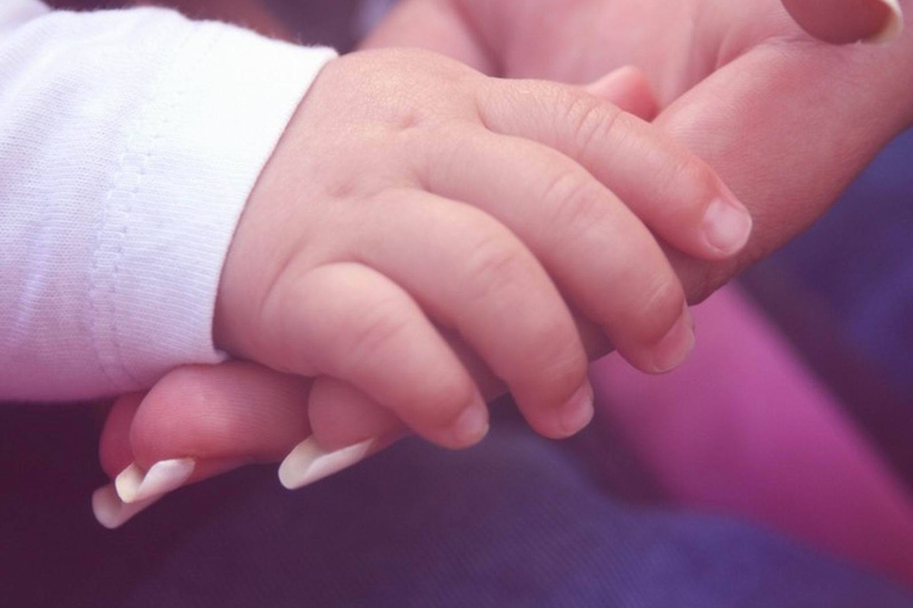

这两句诗出于白居易的《燕诗示刘叟》，说的虽然是燕子，却实是以物喻人。我对于自己年幼时的了解多半源于长辈们的口中，由一个个故事和恍惚的回忆织就而成。 我记忆里的小时候，爸爸在外面做生意不会经常回家，家中的日常人设是我和工作日白天要上班的妈妈。这个日常人设对我如今最大的影响应该就是--如果有人敲门我第一反应是不出声装作家里没有人的样子。这些年与亲朋好友家的小宝宝约略接触便可深感照顾一个孩子的繁琐与责任，所以不展开了显得矫情。因着姥姥要照顾两个姐姐且奶奶不愿照顾我，所以我幼时的记忆很多是与保姆一家相处生活的。当时妈妈每天上班前把我送到照顾我的阿姨家里，下班再接我回家。每日忙碌工作，忙碌生活，对我却是极尽耐心和细心。相信每个妈妈都为自己的孩子承受过本不该承受的辛苦，忍受过本不该忍受的委屈，只为了孩子的成长，心甘情愿。 从襁褓中婴孩成长而来的我们，一点一滴的进步都是父母亲心血的成果。喃喃教言语，一一刷毛衣。从生活到学识，大抵都是如此。
喃喃教言语，一一刷毛衣

襁褓中成长
从年岁上算，再过两年我就够了妈妈生育我的年纪。20多岁，青春而美好的年纪，却选择了拿出无限的时间、精力和金钱在我们身上。我曾在深夜感慨：想到以后我买散粉的钱要给我闺女买奶粉，就觉得现在应该对自己好一点。 刚上幼儿园的时候，我发现老师教的拼音我会，老师教的诗歌我会，简单的加减乘除我会。姥姥告诉我，我尚不能开口讲话的时候妈妈就照着画册一首一首的教我诗歌，不知重复了多少遍。 人家见生男女好，不知男女催人老。所有的妈妈都会如此，不计辛苦的对我们付出，哪怕有万分之一的回报都会无比的满足和欣慰。为了这些许的满足和欣慰，付出着自己的青春。